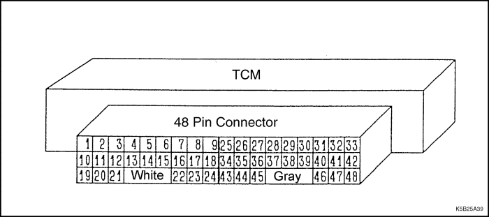
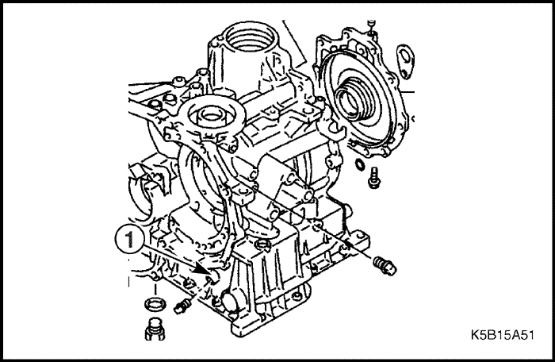
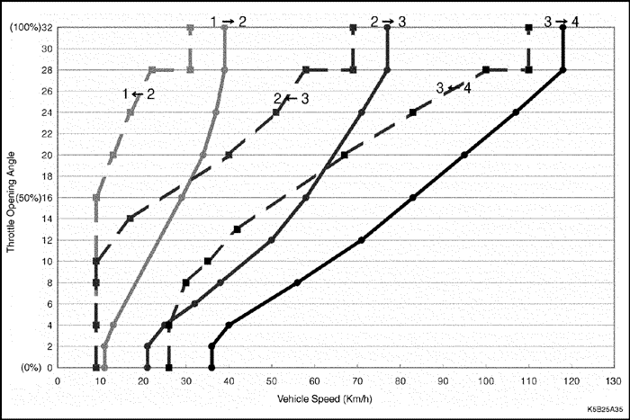
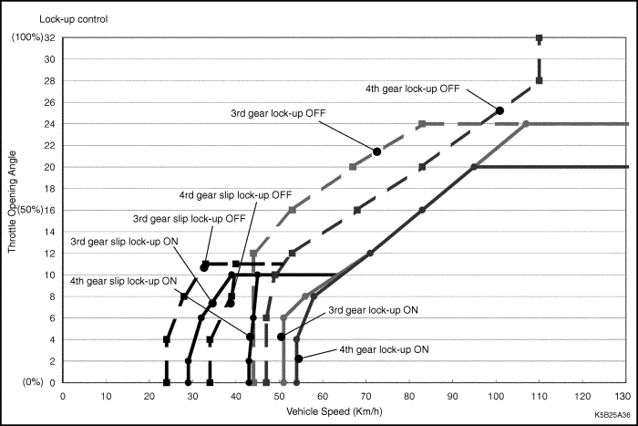
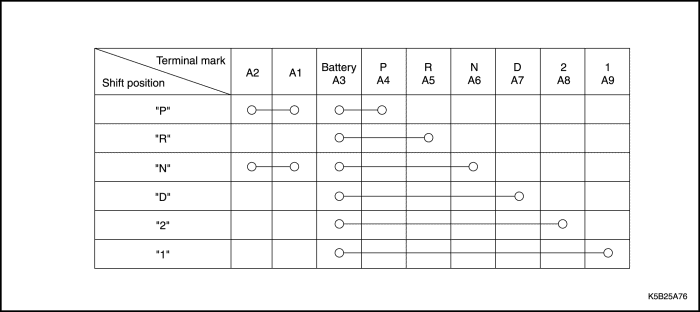
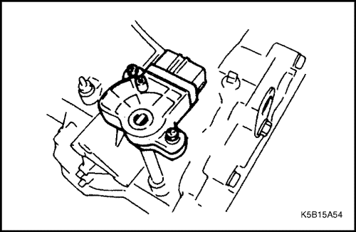
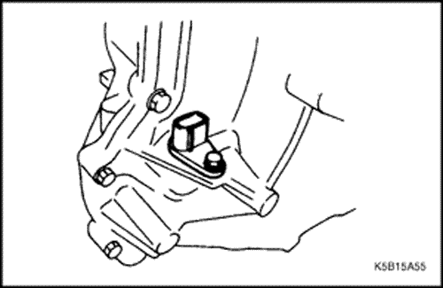
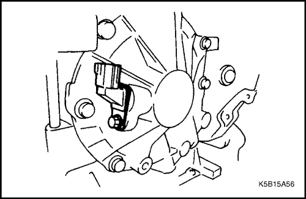
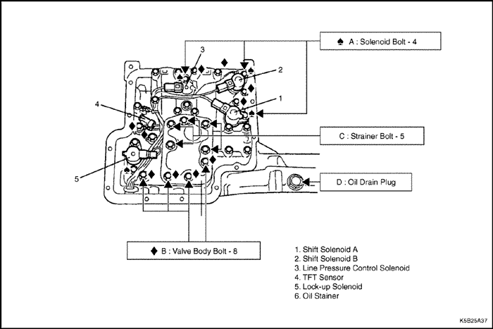

DIAGNÓSTICO
Conocimientos básicos necesarios
Cuando vaya a localizar averías de la caja de cambios automática, compruebe primero la caja de cambios en el vehículo para hallar la raíz del problema y, a continuación, determine si debe desmontarse la transmisión o no.
Si no se sigue este procedimiento, se perderá tiempo y pueden surgir problemas derivados.
Los problemas de la caja de cambios se dividen en las siguientes categorías:
- Inspección o ajuste incorrectos
- Rendimiento deficiente del motor
- Fallo del mecanismo de control hidráulico
- Fallo de la unidad de control eléctrica
- Fallo mecánico en la transmisión
Con el fin de efectuar correctamente el diagnóstico del problema en el vehículo, intente que el cliente le determine con la mayor precisión posible la naturaleza del problema. Intente reproducir el problema si es posible.
Localización de averías mediante diagnóstico
El sistema de la caja de cambios consta de una función de diagnóstico, que resulta de gran importancia a la hora de localizar averías eléctricas. En cuanto a los problemas mecánicos, si esta función no detecta códigos de error, deberá llevarse a cabo una comprobación y localización de averías consultando el "Diagnóstico por síntomas".
Comprobación primaria
Es necesario comprobar si se ha realizado o no el mantenimiento básico de la caja de cambios automática.
Los detalles del mantenimiento se describen en "Comprobación primaria" e "Inspección de componentes".
- Comprobación de alimentación de corriente y tensión
La tensión de la batería debe estar entre 10 y 14 V con el motor parado.
- Comprobación del aceite de la caja de cambios automática (ATF)
Compruebe el nivel y el estado del aceite.
- Prueba de inmovilización
Compruebe la velocidad del motor estando inmovilizado en cada gama, y compruebe el rendimiento global de la caja de cambios automática y el motor.
- Comprobación de la presión del aceite
Mida la presión de funcionamiento estando en ralentí y con el motor inmovilizado, y compruebe las funciones de cada componente.
- Comprobación del reglaje del encendido y de la velocidad del motor en ralentí
Realice los ajustes necesarios si no están dentro de las gamas especificadas.
Si se produce algún problema como una "velocidad del motor fluctuante", busque primero la avería en el motor.
- Comprobación y ajuste del varillaje de selección
- Comprobación y ajuste del sensor del acelerador
- Prueba en carretera
Debe realizarse una prueba en carretera para evaluar el problema convenientemente y como comprobación posterior al mantenimiento.
- Comprobación del cableado eléctrico
Compruebe que los conectores estén bien sujetos, que el conector no se oxide ni acumule objetos extraños, que los terminales estén bien y no se deformen, además de que el cableado esté bien sujeto y no se afloje, evitando que pueda dañarse con el contacto con piezas calientes, giratorias o que se muevan.
Factores relacionados con el problema
Al localizar una avería, el técnico de servicio debe tratar de reproducir el problema. Por tanto, es importante intentar, basándose en la información obtenida en la entrevista técnica, reproducir las circunstancias que provocan el problema (condiciones climáticas, tipo de carretera y modo de conducción). Un método paciente de lograr esto es reproducir factores tales como vibraciones (moviendo con la mano el cableado o un relé), generar calor (con aire caliente) y usar agua, si fuera necesario. Así pues, suponiendo que el conjunto/las piezas puedan ser la causa del problema y utilizando un comprobador para verificar los diversos factores que puedan contribuir al mismo, se puede llegar a determinar el comportamiento del conjunto/las piezas en el momento en el que se produjo el problema.
Terminal de TCM
Disposición del terminal del TCM



Lista de nombres del terminal
Nº de patilla | Denominación de la señal | Nº de patilla | Denominación de la señal |
1 | Solenoide de control de presión | 25 | Masa para sistema |
2 | Retorno de masa | 26 | Interruptor de gama P |
3 | Solenoide de bloqueo | 27 | Interruptor de gama 2 |
4 | . | 28 | . |
5 | CAN BAJA (cable trenzado) | 29 | . |
6 | CAN ALTA (cable trenzado) | 30 | . |
7 | . | 31 | . |
8 | Masa para sensor | 32 | Sensor de velocidad del vehículo |
9 | Sensor de turbina (cable blindado) | 33 | LÍNEA K (scanner) |
10 | Alimentación de corriente | 34 | Interruptor de gama 1 |
11 | Alimentación de corriente | 35 | Interruptor de gama D |
12 | Luz de diagnóstico | 36 | Interruptor de gama R |
13 | . | 37 | . |
14 | . | 38 | Interruptor de gama N |
15 | . | 39 | . |
16 | . | 40 | Velocímetro |
17 | Interruptor de diagnóstico | 41 | . |
18 | Interruptor de desconexión de superdirecta | 42 | . |
19 | Batería de reserva | 43 | Masa para sistema |
20 | Solenoide B de cambio | 44 | . |
21 | Solenoide A de cambio | 45 | . |
22 | . | 46 | . |
23 | . | 47 | . |
24 | . | 48 | Sensor de temperatura del aceite de transmisión (TFT) |
Lista de tensiones del terminal (motor parado, llave de contacto en la posición ON)
Nº de terminal | Nombre de terminal | Tensión de terminal |
1 | Solenoide de control de presión | 0 V ó 12 V |
2 | Retorno de masa | 0 V |
3 | Solenoide de bloqueo | 0 V ó 12 V |
5 | CAN BAJA | El terminal es para la comunicación en serie, no es posible juzgar si está bien o no por la tensión del terminal. Debe realizarse la inspección según el código de error. |
6 | CAN ALTA | . |
8 | Masa para sensor | 0 V |
9 | Sensor de la turbina | 0 V |
10, 11 | Alimentación de corriente | Tensión de la batería |
12 | Luz de diagnóstico | Tensión de la batería |
17 | Interruptor de diagnóstico | Tensión de la batería |
18 | Interruptor de desconexión de superdirecta | Conectado: tensión de la batería, Desconectado: 0 V |
19 | Batería de reserva | Tensión de la batería |
20 | Solenoide B de cambio | Tensión de la batería |
21 | Solenoide A de cambio | Tensión de la batería |
25 | Masa para sistema | 0 V |
26 | Interruptor de gama P | Tensión de la batería en gama "P" |
27 | Interruptor de gama 2 | Tensión de la batería en gama "2" |
32 | Sensor de velocidad del vehículo | 0 ó 12 V |
33 | LÍNEA K | Tensión de la batería |
34 | Interruptor de gama 1 | Tensión de la batería en gama "1" |
35 | Interruptor de gama D | Tensión de la batería en gama "D" |
36 | Interruptor de gama R | Tensión de la batería en gama "R" |
38 | Interruptor de gama N | Tensión de la batería en gama "N" |
40 | Velocímetro | 0 ó 12 V |
43 | Masa para sistema | 0 V |
48 | Sensor de TFT | 0~2,5 V en el terminal con el conector del solenoide de cambio quitado |
Comprobación primaria
Asegúrese de realizar esta comprobación antes de llevar a cabo ninguna otra.
No sustituya, añada ni ajuste el nivel del aceite de la caja de cambios automática (ATF) antes de realizar la prueba que reproduzca el problema.
Nivel y estado del aceite de la caja de cambios automática (ATF)
- Conduzca el vehículo hasta que el ATF alcance la temperatura normal de (70-80°C), que suele alcanzarse después de 5 km aproximadamente de conducción por ciudad.
- Estacione el vehículo sobre un terreno llano y ponga el freno de estacionamiento con el motor en ralentí. Mueva la palanca selectora lentamente de "P" a "1" y luego póngala de nuevo en "P".
- Con el motor en marcha, extraiga la varilla del nivel de aceite, límpiela con una toallita de papel y vuélvala a meter para comprobar el nivel del ATF. El nivel del aceite debe estar dentro de la gama especificada en la varilla de nivel. Si el nivel es demasiado bajo, añada el ATF recomendado. Compruebe si el ATF huele raro, tiene sustancias extrañas o está descolorido.
Aviso:
- El nivel de aceite cambia antes y después de que el motor se caliente. Asegúrese de seguir el procedimiento anterior al realizar esta comprobación.
- Antes de efectuar la comprobación, no olvide limpiar la suciedad y mugre alrededor de la varilla de nivel para que no entre nada en la caja de cambios.
Aceite recomendado: ESSO JWS3314
Nivel del aceite de la caja de cambios automática (ATF)
El nivel del aceite debe estar dentro de la gama especificada. Si el nivel es bajo, compruebe visualmente si la caja de cambios presenta fugas.
Estado del aceite de la caja de cambios automática (ATF)
El aceite normal es rojo y de viscosidad moderada. Si el aceite está oscuro, muy viscoso o huele raro (a quemado), realice la prueba en carretera, de inmovilización o de presión del aceite. Si el vehículo funciona con normalidad, cambie el aceite y vuelva a realizar la prueba en carretera.
Si el color del aceite se ha aclarado, es posible que el refrigerador de aceite esté dañado.
Tiempo de retardo
Aviso:
- En esta prueba, no olvide esperar al menos un minuto una vez puesta la palanca selectora en "N" antes de iniciar la siguiente medición.
- Asegúrese de realizar la medición cuando el motor esté totalmente caliente.
- Tras comprobar el nivel del aceite, coloque calzos en las ruedas delanteras y traseras y pise el pedal del freno.
- Arranque el motor y mueva la palanca selectora de "N" a "D". Mida con un cronómetro el tiempo que a partir de ese momento tarda en notarse una sacudida de cambio.
- De forma similar, mida el tiempo de retardo desde "N" a "R".
Tiempo de retardo estándar:
Gama "N" → Gama "D": 0,6 seg. Gama "N" → Gama "R": 0,9 seg. Criterios
Resultado | Causa probable |
El tiempo de retardo de "N" a "D" sobrepasa el nivel especificado. | - Patinaje de embrague de baja
- Patinaje de embrague unidireccional
- Daño en el retén de aceite del pistón del embrague
| - Baja presión de funcionamiento.
|
El tiempo de retardo de "N" a "R" sobrepasa el nivel especificado. | - Patinaje de freno de marcha atrás y baja
- Patinaje de embrague de marcha atrás
- Daño en el retén del pistón del embrague o freno
|
Velocidad de inmovilización
Aviso:
- No mantenga el estado de inmovilización durante más de 5 segundos a la vez.
- Asegúrese de dejar enfriar la caja de cambios, dejando funcionar el motor a ralentí durante al menos 30 segundos antes de comenzar la siguiente prueba.
- Compruebe el nivel y el estado del ATF.
- Coloque calzos en las ruedas delanteras y traseras y aplique del todo el freno de estacionamiento.
- Acople un tacómetro de motor.
- Ponga el motor en marcha. Ponga la palanca selectora en "D" y pise el pedal del acelerador mientras observa la velocidad del motor. Lea rápidamente la velocidad del motor (velocidad de inmovilización) en el punto en el que la velocidad del motor sea constante (punto de inmovilización).
- Realice esta prueba en "D" y también en "1".
Velocidad de inmovilización (rpm): 2.700
Criterios
Resultado | Causa probable |
Inferior al nivel especificado en todas las gamas | - Potencia de motor insuficiente
- Convertidor de par defectuoso
|
Superior al nivel especificado en "D" y "2" | - Patinaje de embrague unidireccional
- Patinaje de embrague de baja
|
Superior al nivel especificado en "D", "2" y "1" | - Patinaje de embrague de baja
|
Superior al nivel especificado en "R" | - Patinaje de embrague de marcha atrás
- Patinaje de freno de marcha atrás y baja
|
Superior al nivel especificado en "R" y "1" | - Patinaje de freno de marcha atrás y baja
|
Superior al nivel especificado en todas las gamas | - Baja presión de funcionamiento
- Bomba de aceite defectuosa
- Regulador de presión defectuoso
|
Presión del aceite
- Compruebe el nivel y el estado del ATF.
- Acople el DW240-010-02 al orificio para inspección de la presión del aceite en la carcasa de la caja de cambios.
- Coloque calzos en las ruedas delanteras y traseras y aplique del todo el freno de estacionamiento.
- Ponga en marcha el motor y pise el pedal del freno. Mida la presión del aceite en las gamas "D" y "R" con el motor en ralentí e inmovilizado.
Aviso:
- Asegúrese de que no haya fugas de ATF después de colocar el manómetro del aceite.
- No mantenga el estado de inmovilización durante más de 5 segundos a la vez. Asegúrese de dejar enfriar la caja de cambios, dejando funcionar el motor a ralentí durante al menos 30 segundos antes de comenzar la siguiente prueba.
Presión del aceite estándar [kPa{kgf/cm²}]
Funcionamiento del motor | Gama "D" | Gama "R" |
Ralentí | 390 {4,0} | 390 {4,0} |
Inmovilización | 1210 {12,3} | 1580 {16,1} |
Cuando vaya a medir la presión del aceite, quite el tapón indicado en el siguiente diagrama y acople el medidor de presión.

Criterios
Resultado | Causa probable |
Gama "D" | Gama "R" |
Superior a la presión del aceite especificada en ralentí Superior a la presión del aceite especificada con el motor inmovilizado | - Caja de válvulas defectuosa
| . |
Inferior a la presión del aceite especificada en ralentí Inferior a la presión del aceite especificada con el motor inmovilizado | - Bomba de aceite defectuosa
- Retén de aceite del pistón del embrague de baja dañado
| - Retén de aceite del pistón del embrague de marcha atrás dañado
- Retén de aceite del pistón del freno de marcha atrás y baja
|
Prueba en carretera
Debe realizarse una prueba en carretera para evaluar el problema con precisión y como comprobación posterior al mantenimiento.
- Compruebe el nivel y el estado del ATF.
- Conduzca el vehículo para comprobar que los puntos de cambio coinciden con el diagrama de cambio.
Compruebe que no se producen sacudidas de cambio ni ruidos.
Aviso:
- Cuando realice la prueba en carretera, preste atención a la situación del tráfico y tenga siempre presente la seguridad.
- El diagrama de cambio muestra las velocidades a las que se empieza a cambiar. La velocidad del vehículo a la que se ha completado el cambio al acelerar difiere 2,8 km/h de la del diagrama.
Diagrama de cambio


Prueba de gama "P"
Comprobación
- Estacione el vehículo en una pendiente ascendente (de más de 5°) y seleccione la gama "P". Suelte el freno de estacionamiento para comprobar que el vehículo no se mueva.
- En las mismas condiciones, compruebe que el vehículo se mueva al mover la palanca selectora de la gama "P" a otras gamas.
- De forma similar, realice la prueba en una pendiente descendente.
Inspección de componentes
Sustitución del aceite de la caja de cambios automática (ATF)
- Quite el tapón de drenaje y vacíe el aceite de la caja de cambios automática (ATF) con el motor parado.
Aviso: El aceite no puede vaciarse completamente.
- Vuelva a poner el tapón de drenaje y apriételo hasta 40 N•m (30 lb-pie).
- Eche por el tubo de llenado la misma cantidad del aceite especificado que haya vaciado.
ATF especificado: ESSO JWS3314
Referencia: Cantidad total de aceite: 4,78 L
Aviso:
- No mezcle distintas clases de aceite.
- Si se usa un tipo diferente de ATF, pueden surgir problemas con el embrague y el freno.
- Arranque el motor y déjelo funcionar a ralentí al menos durante cinco minutos.
- Levante el vehículo. Acelere el motor poco a poco hasta que su velocidad alcance aproximadamente los 50 km/h en la gama "D"; pise luego el pedal del freno para dejar que el motor funcione en ralentí. Suelte el freno durante unos 10 segundos en la gama "R" y pise el freno de nuevo para dejar que el motor funcione en ralentí. Repita estos pasos en este orden dos o tres veces.
- Repita los pasos 1-5 anteriores dos veces.
- Compruebe entonces el nivel de ATF.
Aviso: El nivel del aceite debe comprobarse con el motor en ralentí y después de que se haya calentado la caja de cambios.
Interruptor de gama de transmisión (TR)
Desmontaje (desmonte la caja de cambios automática del vehículo y desármela con el eje manual acoplado)
- Quite con un punzón el pasador del muelle y desmonte el conjunto de la palanca selectora.
- Quite el tornillo de fijación del interruptor de TR y desmonte dicho interruptor.
Después del montaje habrá que hacer ajustes.
Ajuste
- Coloque el conjunto de la palanca selectora en "N".
- Afloje el tornillo de fijación del interruptor de TR.
- Fije el conjunto de la palanca selectora introduciendo un pasador de 4 mm (taladro) en los orificios posicionadores del conjunto y del interruptor de TR.
- Apriete el tornillo de fijación hasta 3,2 N•m (28 lb-pulg.).
Comprobación
Compruebe el interruptor de TR para asegurarse de que la continuidad en cada posición corresponde con la de la siguiente tabla.


Sensor de velocidad del vehículo
Comprobación
- Ponga la palanca selectora en la gama "N" y suelte el freno de estacionamiento.
- Levante el vehículo hasta que las ruedas dejen de tocar el suelo.
- Conecte la resistencia (1 - 10 kΩ) entre el terminal de alimentación y el terminal del velocímetro del conector del sensor de velocidad. A continuación, conecte el comprobador de circuitos.
- Gire las ruedas (se recomienda girarlas con la mano).
El comprobador de circuitos debería alternar entre 0 V y 12 V. Si no lo hace, sustituya el sensor de velocidad.

Sensor de la turbina
Comprobación
- Desmonte el conector del sensor de la turbina.
- Compruebe la resistencia entre los terminales del sensor de la turbina. Si la resistencia es demasiado baja o demasiado alta, sustituya el sensor de la turbina.
Resistencia: 540Ω (20°C)

Solenoide de cambio
Comprobación
- Desmonte el conector del solenoide.
- Aplique tensión de la batería a los terminales de los solenoides A y B de cambio. Asegúrese de que oye un clic de funcionamiento dentro de la carcasa de la caja de cambios.
- Compruebe la resistencia entre el terminal de los solenoides A y B de cambio y la carcasa de la caja de cambios. Si la resistencia es demasiado baja o demasiado alta, sustituya el solenoide de cambio en cuestión. Si desea más detalles sobre su sustitución, consulte la sección "Caja de válvulas".
Resistencia: aproximadamente 25Ω (20°C)
Solenoide de control de presión de funcionamiento
Comprobación
- Desmonte el conector del solenoide.
- Compruebe la resistencia entre el terminal del solenoide de presión de funcionamiento y la carcasa de la caja de cambios. Si la resistencia es demasiado baja o demasiado alta, sustituya el solenoide de presión de funcionamiento. Si desea más detalles sobre su sustitución, consulte la sección "Caja de válvulas".
Resistencia: 2,9Ω (20°C)
Solenoide de bloqueo
Comprobación
- Desmonte el conector del solenoide.
- Compruebe la resistencia entre el terminal del solenoide de bloqueo y la carcasa de la caja de cambios. Si la resistencia es demasiado baja o demasiado alta, sustituya el solenoide de bloqueo. Si desea más detalles sobre su sustitución, consulte la sección "Caja de válvulas".
Resistencia: 13Ω (20°C)
Sensor de temperatura del aceite de transmisión (TFT)
Comprobación
- Desmonte el conector del solenoide.
- Compruebe la resistencia entre los terminales del sensor de TFT, la masa de dicho sensor y masa. Si la resistencia es demasiado baja o demasiado alta, sustituya el sensor de TFT. Si desea más detalles sobre su sustitución, consulte la sección "Caja de válvulas".
Resistencia:
20°C: aproximadamente 2,5 kΩ
50°C: aproximadamente 0,82 kΩ
80°C: aproximadamente 0,325 kΩ
Caja de válvulas

Procedimiento de desmontaje
- Desmonte el terminal NEGATIVO de la batería.
- Quite el tapón de drenaje para vaciar el aceite de la transmisión.
- Desmonte el cárter del aceite.
- Desmonte el terminal del solenoide.
- Quite el tornillo de instalación del sensor de TFT.
- Retire la malla filtrante.
- Desmonte el conjunto de la caja de válvulas y el solenoide de cambio.
Aviso: Dado que el aceite permanece dentro del conjunto, coloque un receptáculo debajo de la transmisión al desmontar el cárter del aceite.
Procedimiento de montaje
El montaje debe efectuarse siguiendo en orden inverso los mismos pasos que para desmontar el cárter, apretando según el par que se indica a continuación.
Cambie el aceite de la transmisión y compruebe luego el nivel del mismo.
Apretar
♠ A: Tornillo del solenoide de cambio - 8 N •m (71 lb-pulg.)
♦ B: Tornillo de instalación de la caja de válvulas - 8 N•m (71 lb-pulg.)
C: Tornillo de instalación de la malla filtrante - 8 N•m (71 lb-pulg.)
D: Tapón de drenaje - 40 N•m (30 lb-pie)
Precauciones al desmontar y montar transmisiones
Puesto que las cajas automáticas se componen de piezas de precisión, preste atención a lo siguiente durante su montaje y desmontaje.
- Lleve a cabo el desmontaje en un lugar limpio y sin polvo.
- Coloque una esterilla de goma sobre el banco; tenga cuidado de no arañar las piezas.
- No use guantes ni trapos sucios (use tela de nylon o toallitas de papel).
- Al desmontar la sección de conexión de la carcasa, no fuerce nada ni con un destornillador ni con ninguna herramienta similar; golpee suavemente las piezas de la carcasa con un martillo de goma para desmontarlas.
- Antes de desmontar, limpie la parte externa de la caja de cambios (para evitar que entre suciedad en la misma).
- Limpie las piezas desmontadas con aceite de transmisión o queroseno, y sople aire para comprobar los conductos de aceite (tenga cuidado de que no salpique ni se derrame aceite de transmisión ni queroseno). Limpie el disco, cinta de freno, arandela de resina y piezas de goma con el aceite de transmisión.
- Sustituya la junta, el retén de aceite y las juntas tóricas en forma de "O" y de "D" por otras nuevas.
- Ponga aceite de transmisión en las secciones deslizantes y giratorias antes de volver a montar.
- Use cinta de freno y disco nuevos después de sumergirlos en aceite de transmisión durante más de dos horas.
- No utilice aceites que no sean los especificados.
Inspecciones y medidas
Ítem | Puntos que se han de inspeccionar | Medida |
Inspección de piezas de fundición y piezas maquinadas | Arañazos y rebabas Conductos de aceite obstruidos Restos de juntas Piezas agrietadas | Sustituir piezas. Pasar un cable o soplar aire para limpiar. Retirar la junta. Sustituir piezas. |
Inspección de cojinetes | Los que tengan problemas para girar Vetas, pasos de rosca, arañazos, grietas | Sustituir Sustituir |
Inspección de casquillo y arandela de empuje | Arañazos, rebabas, desgaste, quemaduras | Sustituir |
Inspección de retén de aceite y junta | Arañazos y material endurecido en arandela de junta Desgaste periférico y lateral de arandela de junta Arandela de junta de pistón, retén de aceite, junta | Sustituir Sustituir Sustituir |
Inspección de engranaje | Arañazos o rebabas Desgaste considerable de los dientes | Sustituir Sustituir |
Inspección de estrías | Rebabas, arañazos, deformación | Sustituir |
Inspección de anillo elástico de retención | Desgaste, arañazos, deformación Piezas sin interferencias | Sustituir |
Inspección de tornillos | Rebabas, piezas dañadas | Sustituir |
Inspección de muelle | Ajuste, quemaduras | Sustituir |
Inspección de disco de embrague y disco de freno | Desgaste, quemaduras, alabeo de plato, grietas, distorsión, garra dañada | Sustituir |
Inspección de plato de embrague y plato de freno | Desgaste, quemadura, distorsión, garra dañada | Sustituir |
Inspección de cara de retén (cara donde toca el labio) | Arañazos, puntos secos, desgaste Obstruido con materias extrañas | Sustituir Reparar |
 | |  | |
| © Copyright Chevrolet Europe. Reservados todos los derechos |